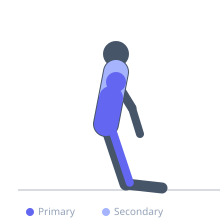
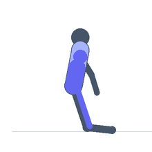

Exercise guide / Medicine Ball Slam — Kneeling
Medicine Ball Slam — Kneeling
A medicine ball slam performed from the kneeling position (both knees on the floor), which removes the leg drive component and places the full power generation demand on the core and upper body. The overhead-to-ground throw trains explosive hip flexion and spinal flexion with no hip extension assist, creating a unique anti-extension-to-flexion power pattern. Used in core power development, rehabilitation programs where standing is contraindicated, and metabolic conditioning.
Primary muscles
rectus abdominis
psoas major
deltoid anterior
Secondary muscles
trapezius upper
erector spinae
Stabilizers
transverse abdominis
Equipment
No Equipment (Bodyweight)


Starting position
- Kneel on a mat with both knees and shins on the floor. Hold a slam medicine ball with both hands in front of the chest.
Setup
- Use a non-bounce slam ball (dead ball). Kneel on a mat for comfort. Begin with a lighter weight (4-6 kg) before increasing.
Steps
- Step 1: Kneel upright with the ball at chest height.
- Step 2: Raise the ball overhead with arms fully extended, rising tall through the torso.
- Step 3: Slam the ball to the floor in front of the knees with maximum force, allowing the spine to flex through the motion.
- Step 4: Catch or retrieve the ball and return to the overhead position. Repeat.
Coaching cues
- Reach tall overhead before you slam — the full extension before the flexion is key
- Slam through the floor — not just to the floor
- Drive the ball down with the entire upper body — not just the arms
Breathing
- Exhale forcefully during the slam. Inhale as you raise overhead.
Range of motion
- Full overhead extension on the wind-up. Full spinal flexion through the slam.
Tempo
- 1 repetition every 2-3 seconds. Explosive slam, controlled pickup.
Common mistakes
- Using a bouncy ball that creates safety hazard — only use slam (dead) balls
- Leaning back excessively overhead rather than simply raising the arms
- Not following through the slam — the torso should flex fully through the throw
Safety
- Use a dead ball only — a rubber bounce ball can rebound dangerously from the floor
- Do not perform near low ceilings
- Knee comfort requires a thick mat
Training
- endurance: 8–15 reps
- endurance: 2–4 sets
- Rest: {'endurance': 60}